.jpg){kind=link}


.jpg){kind=link}

,_New_Zeeland.jpg){kind=link}


.jpg){kind=link}


Wellington
Bolton Hotel
Independent hotel in central Wellington, near Parliament and the waterfront, with rooms and suites, a restaurant, fitness center, lap pool, sauna and spa pool.
Check roomsOfficial hotel website · opens in a new tab
Oceania / A place to get to know
Māori heritage, alpine scenery and imaginative journeys

Welcome to New Zealand
New Zealand's volcanic plateaus, caves and Southern Alps place very different landscapes within one island country. Māori heritage, contemporary cities and a distinctive filmmaking history add further layers to the journey.
Explore a little further
Landmarks, landscapes and the stories behind them. Select a photograph for a closer look.
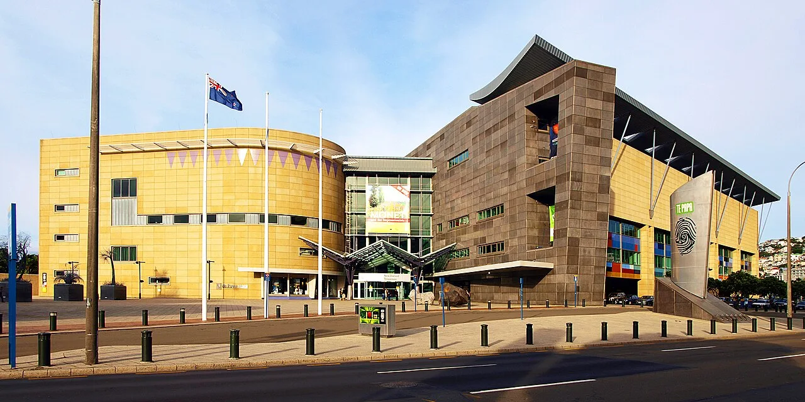
On Wellington's waterfront, Te Papa brings together collections and exhibitions about Aotearoa's people, art and natural environment. Māori taonga and stories sit alongside interpretations of the country's changing society.
Ulrich Lange, Bochum, Germany · CC BY 3.0 . Resized as needed and converted to WebP. No crop.
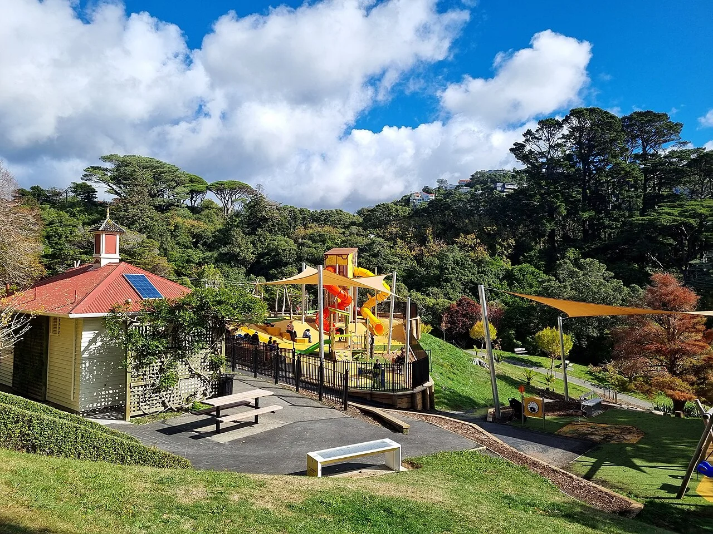
Paths on the hills above central Wellington connect gardens, native forest and viewpoints over the city. The cable car's Kelburn terminus provides a convenient starting point for exploring the grounds.
Wainuiomartian · CC BY 4.0 . Resized as needed and converted to WebP. No crop.
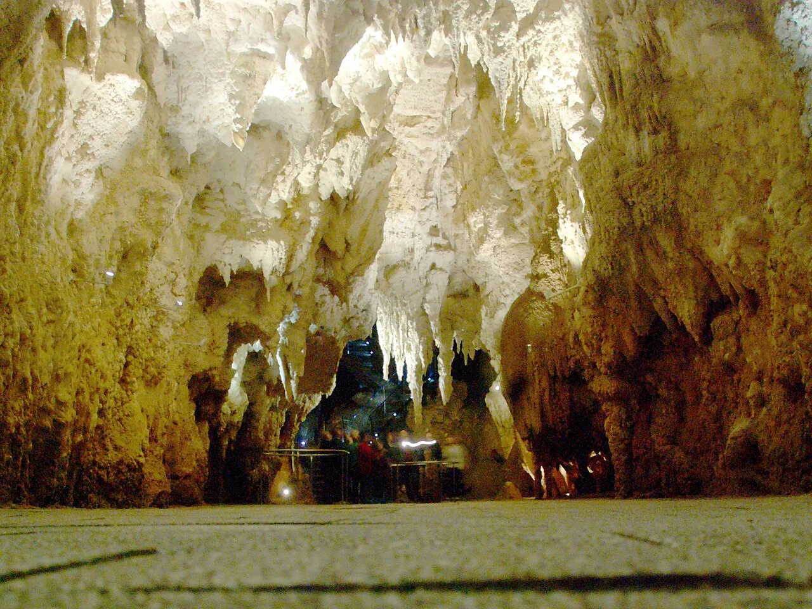
Guided cave experiences reveal limestone formations and tiny lights produced by glowworm larvae. The dark underground setting makes the glowing colonies one of Waitomo's most distinctive natural sights.
Karora · Public domain . Resized as needed and converted to WebP. No crop.
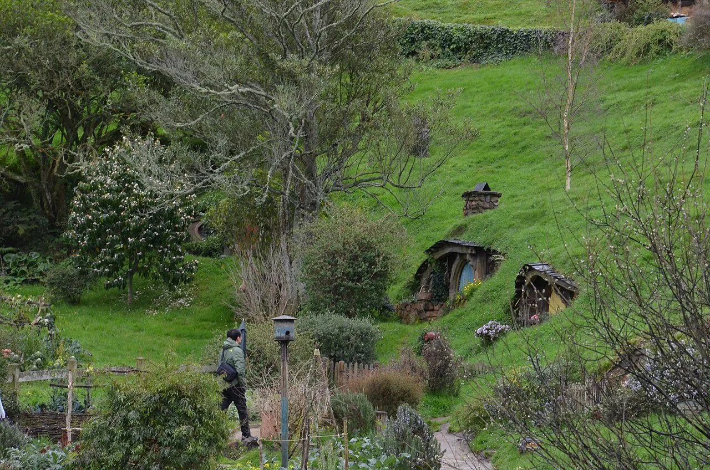
The film set occupies rolling farmland near Matamata in Waikato. Hobbit holes, gardens and other carefully maintained details recreate the Shire landscapes seen in The Lord of the Rings and The Hobbit.
Joe Ross from Lansing, Michigan · CC BY-SA 2.0 . Resized as needed and converted to WebP. No crop.
New Zealand's highest mountain rises in the Southern Alps within a national park of glaciers and alpine valleys. The landscape has deep significance in the traditions of Ngāi Tahu.
Avenue · CC BY-SA 3.0 . Resized as needed and converted to WebP. No crop.
Explore a little further
Māori culture is central to Aotearoa's identity, with Waitangi, Whakarewarewa and Te Puia offering distinct historical and living cultural perspectives. Te reo Māori, carving and performance remain important forms of expression.
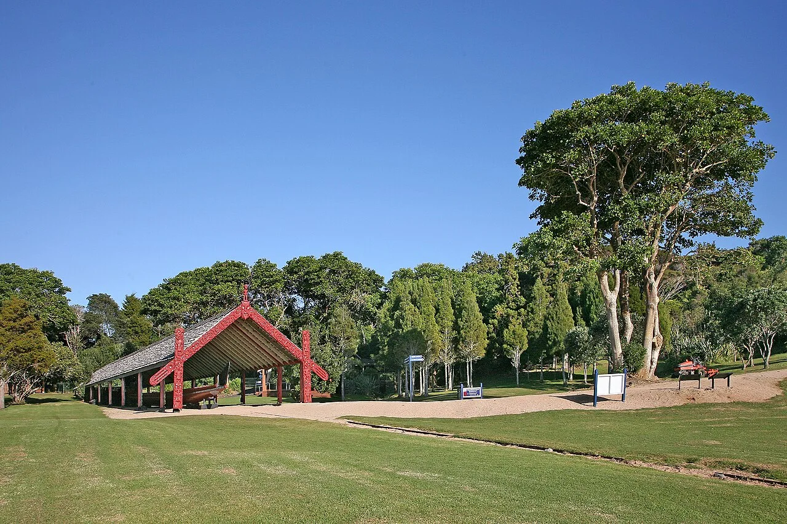
Waitangi Treaty Grounds
W. Bulach · CC BY-SA 4.0 . Resized as needed and converted to WebP. No crop.
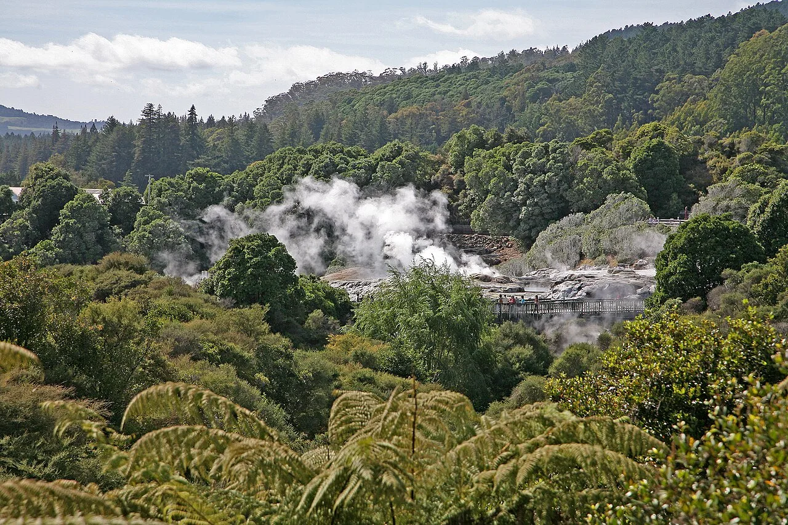
Whakarewarewa
W. Bulach · CC BY-SA 4.0 . Resized as needed and converted to WebP. No crop.
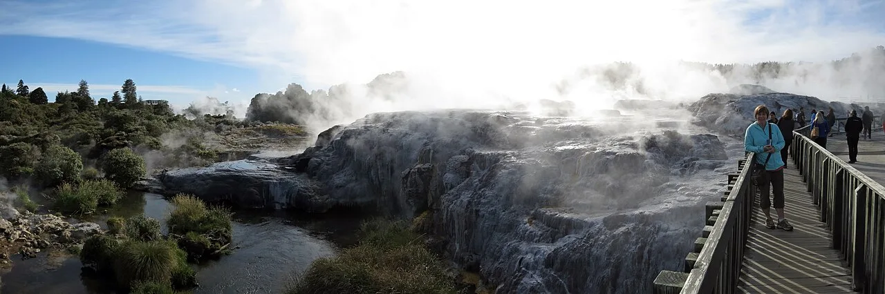
Te Puia, Rotorua
Bob Linsdell · CC BY 3.0 . Resized as needed and converted to WebP. No crop.
Explore a little further
New Zealand's food traditions include Māori earth-oven cooking, local dairy and produce, and much-loved baking and confectionery.
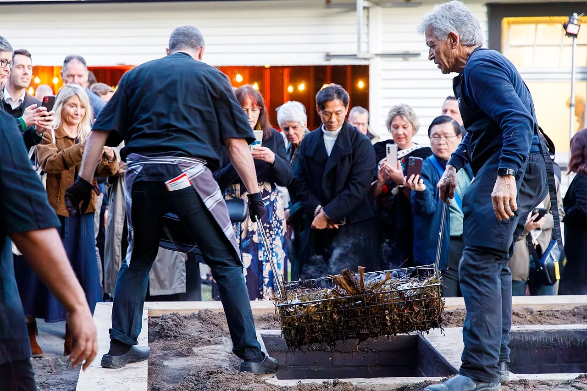
A traditional Māori hāngī cooks meat and vegetables slowly in an earth oven heated with hot stones.
Office of the Governor-General of New Zealand · CC0 . Resized as needed and converted to WebP. No crop.
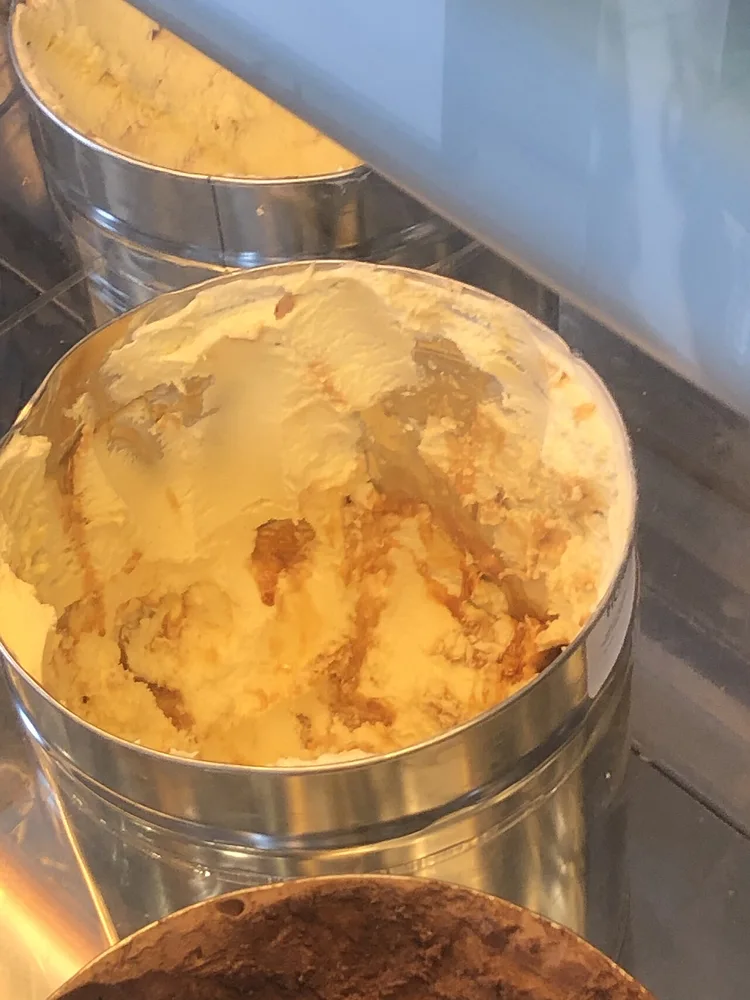
Hokey pokey ice cream combines a creamy vanilla base with crunchy pieces of honeycomb toffee.
Finbar.concaig · CC BY-SA 4.0 . Resized as needed and converted to WebP. No crop.
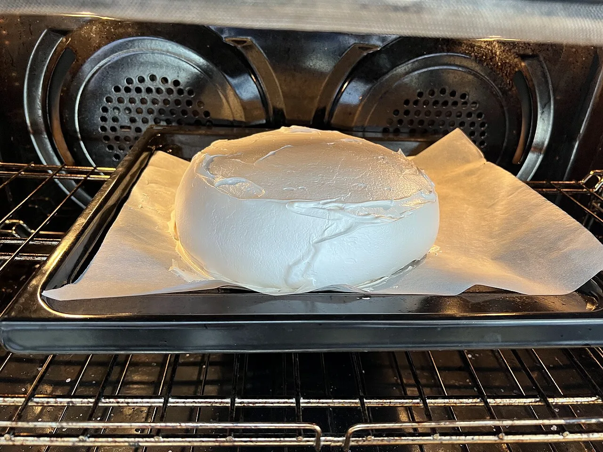
Pavlova is a meringue-based dessert topped with whipped cream and fruit and is popular in both New Zealand and Australia.
Siobhan Leachman · CC0 . Resized as needed and converted to WebP. No crop.
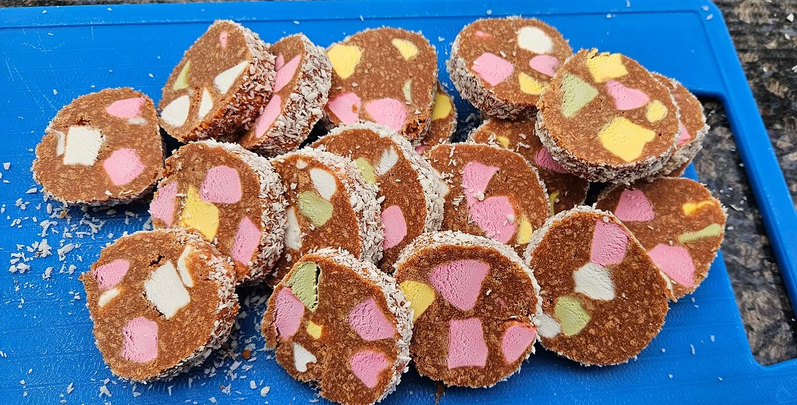
This unbaked sweet combines crushed malt biscuits, condensed milk, butter and colourful lollies, commonly finished with a coating of coconut.
Grouffles · CC0 . Resized as needed and converted to WebP. No crop.
Explore a little further
A city cable car, a volcanic walking route and a canyon jet-boat experience reveal different sides of New Zealand.
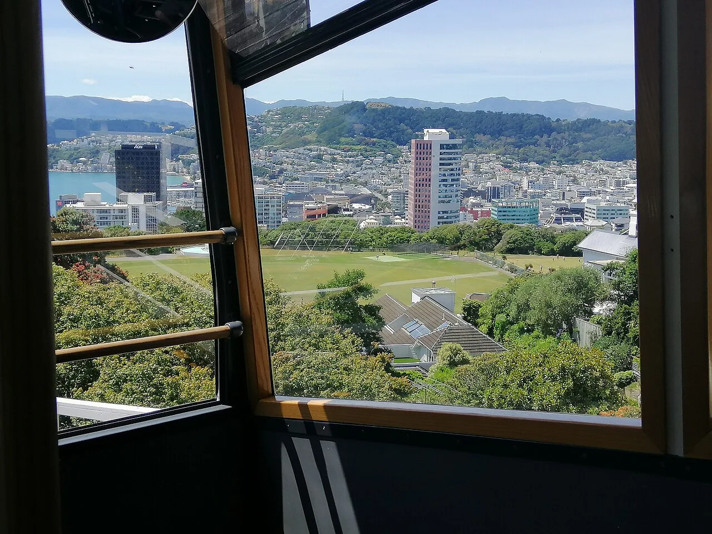
Ride from Lambton Quay to Kelburn for city and harbour views, then explore the nearby Botanic Garden or Cable Car Museum.
Panamitsu · CC BY-SA 4.0 . Resized as needed and converted to WebP. No crop.
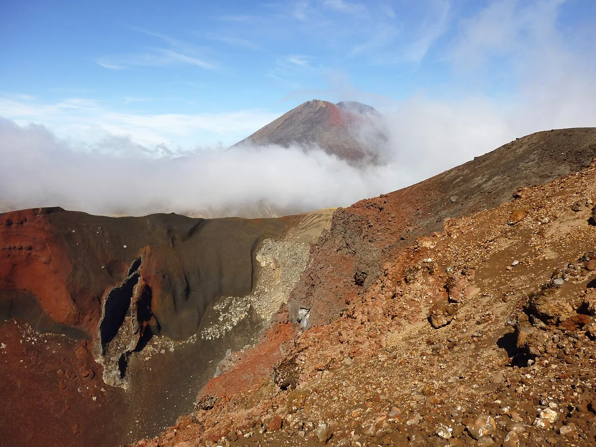
Plan this demanding alpine day walk through volcanic terrain using current Department of Conservation guidance, suitable equipment and weather conditions.
Borvan53 · CC BY-SA 3.0 . Resized as needed and converted to WebP. No crop.
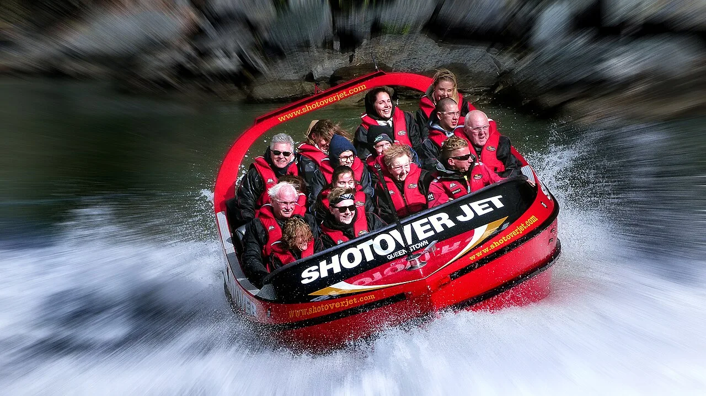
Join an operated jet-boat trip through the Shotover River's narrow canyons near Queenstown, following the operator's participation requirements.
Bernard Spragg. NZ from Christchurch, New Zealand · CC0 . Resized as needed and converted to WebP. No crop.
Explore a little further
Wellington's Cuba Street and Courtenay Place are established areas for restaurants, bars, performance venues and evening city life.
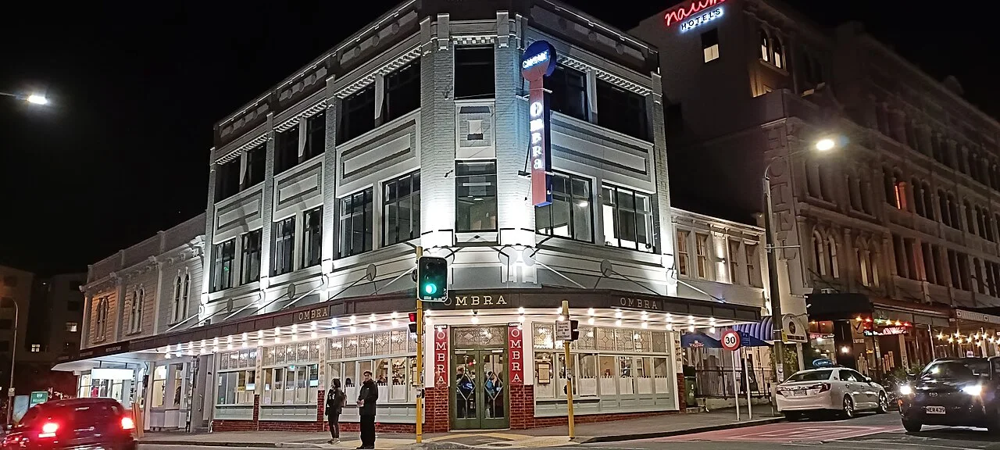
Cuba Street, Wellington
L Maule · CC BY-SA 4.0 . Resized as needed and converted to WebP. No crop.
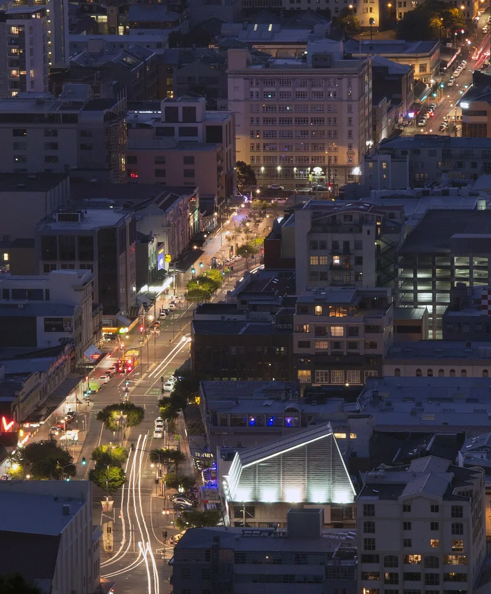
Courtenay Place, Wellington
Clilly4 · CC0 . Resized as needed and converted to WebP. No crop.
Explore a little further
A country overview with selected attraction markers. Use local transport information to plan the route between regions.
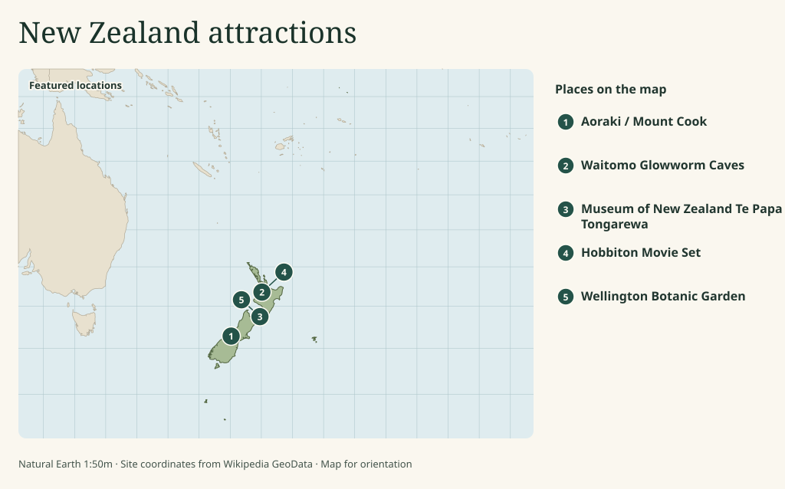
Illustrative overview. Marker locations and map sources are documented below.
A place to settle in
Two places to consider for your trip. Check room choices, current prices and availability directly with each hotel.
Wellington
Independent hotel in central Wellington, near Parliament and the waterfront, with rooms and suites, a restaurant, fitness center, lap pool, sauna and spa pool.
Check roomsOfficial hotel website · opens in a new tab
Wellington
Hotel between Wellington's waterfront and city center, with 236 rooms, restaurants, a lobby lounge, spa and health club, plus rooms overlooking the harbor.
Check roomsOfficial hotel website · opens in a new tab
The hotel sets its prices, booking terms and payment currency. Some properties confirm reservations after an enquiry.
Know your money
Get familiar with the local currency and estimate what an amount in your own currency is worth.
Daily reference Rates By Exchange Rate API . The rate date appears with your estimate.
Morning to evening · New Zealand
Panamitsu · CC BY-SA 4.0 . Resized as needed and converted to WebP. No crop.
Wainuiomartian · CC BY 4.0 . Resized as needed and converted to WebP. No crop.
Ulrich Lange, Bochum, Germany · CC BY 3.0 . Resized as needed and converted to WebP. No crop.
L Maule · CC BY-SA 4.0 . Resized as needed and converted to WebP. No crop.
Suggested order and approximate times, with breaks for meals and travel. Confirm access, reservations, transport and operating hours locally. Evening photographs do not guarantee an event or performance.
Confirm arrangements with the official visitor resource .
Visitor resource: https://www.newzealand.com/int/
Guide: Atlas & Away · New Zealand · researched 18 November 2026.
Explore a little further
A starter in Te reo Māori. The pronunciation hints are approximate; listen to local speakers and ask politely when unsure.
| Phrase | Meaning | Say it approximately |
|---|---|---|
| Kia ora. | Hello or thank you. | — |
| Mōrena. | Good morning. | — |
| Tēnā koe. | Hello to one person, formally. | — |
| Ka kite anō. | See you later. | — |
| Kei te pēhea koe? | How are you? | — |
A little preparation
0 of 4 preparations complete
Saved places and checklists use this browser’s local storage. They are not an account or a booking.
Before you go
The example itinerary stays around Wellington. The full country guide covers several regions; allow extra days and transport for places beyond that route.
Use the Hotels section to open a property’s official website and check rooms, prices and booking terms. You complete any reservation and payment with the hotel.
Open the enquiry page or email profannan712@gmail.com .
Guide researched on 18 November 2026. Text and code were developed with ChatGPT/Codex assistance for this student learning project.
Phrase reference: Te reo Māori phrasebook .
Natural Earth (base data), ChatGPT in Codex (map design) · Public-domain Natural Earth base data . Projected Natural Earth boundaries, added labels and site markers, and exported SVG.